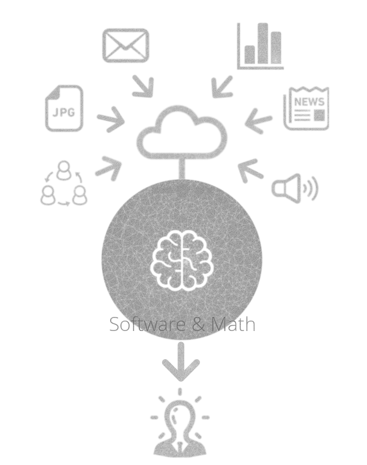
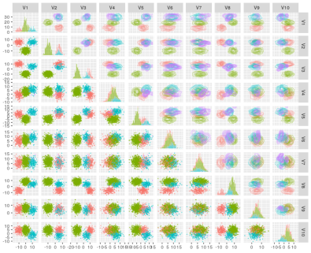
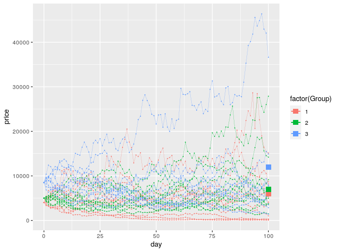
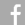

アクティブ投資分析[α]のデータマイニング方法論[methods]を開発します。
機械学習理論の発達によって、コンピュータ上に知能を実現する科学技術が実用に近づいています。知能を表現するための数学は、柔らかく適用範囲を広げ、インターネットの上から社会を包み込もうとしています。私達は、最新の数理・コンピューティング理論を応用したアルファ探索ツールの開発を目指しています。道のりは困難で、ブレークスルーには時間が必要かもしれません。でも、その知的探求と開発の過程を楽しみ尽くし、努力を怠らず、それは一つの旅のように景色を楽しみながら歩んでいきます。私達のメソッドが顧客の新しい発見に貢献できれば光栄です。
機械学習技術により、人の隣に寄り添いながら、重要な知見を発見するソフトウェア・数学ツールの研究・開発を行います。
CRPClustering: An R Package for Bayesian Nonparametric Chinese Restaurant Process Clustering with Entropy
[New Version 1.4]
Clustering is a scientific method which finds the clusters of data and many related methods are traditionally researched. Bayesian nonparametrics is statistics which can treat models having infinite parameters. Chinese restaurant process is used in order to compose Dirichlet process. The clustering which uses Chinese restaurant process does not need to decide the number of clusters in advance. This algorithm automatically adjusts it. Then, this package can calculate clusters in addition to entropy as the ambiguity of clusters.

{kind=link}

左図は、１０次元データのクラスタリング結果。右図はデータのクラスタ密度。（画像をタップで拡大）
Jdmbs: An R Package for Monte Carlo Option Pricing Algorithm for Jump Dif fusion Models with Correlational Companies
[New Version 1.4]
Option is a one of the financial derivatives and its pricing is an important problem in practice. The process of stock prices are basically represented as Geometric Brownian motion or jump diffusion processes. In this package, algorithms and visualizations are implemented in order to calculate option price and plot its result. The implimented algorithms are Monte Carlo method for three equations. The first one is Geometric Brownian motion and the second is jump diffusion processes and furthermore a model that presents jumps among companies affect each other.

{kind=link}

左図は、幾何ブラウン運動。右図は、ジャンプ過程（画像をタップで拡大）
岡田 匡司(Masashi OKADA) 
Japan, Shizuoka City.
Education
2002 Okayama University
System Engineering course.
Job
2002 - 2010
Mondial Co., Ltd.: Shizuoka, JP
Engineer (System Development)
2010 - 2011
National Research Institute of Far Seas Fisheries: Shizuoka, JP
Research Assistant & Associate Researcher
合理的な予測の科学技術と不確かさの制御に関心があります。
機械学習理論・確率解析を応用した数学的な道具とソフトウェアの開発を目指しています。
できれば、多くの方に使っていただける実用的な道具の開発によって、社会に貢献したいと考えています。
興味：
- ベイジアン
- ベイズ深層学習
- 確率解析
- プログラミング （最近は、ScalaとR）
研究テーマ：
- ノンパラメトリックベイズの金融工学への応用
- ベイズ深層学習の金融工学への応用
- デリバティブの価格付け
- ディリクレ過程周辺
- 機械学習・確率解析を応用したソフトウェア
少し自分の事を。
大学時代は、工業系の数学とプログラミング。その後、黎明期のインターネットが面白く、知的システムや知能ソフトウェア、数学はベイジアンに時間を費やす。プログラミングが少なくなるに連れて、数学が多くなり、数理的なソフトウェアを書くことが多くなっています。